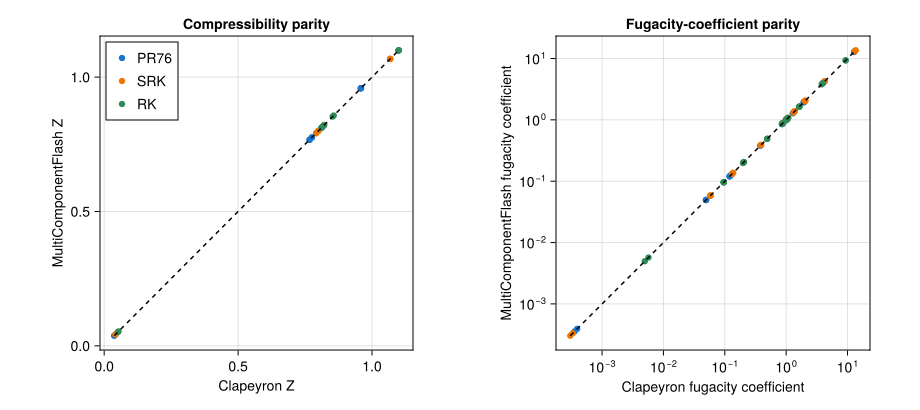
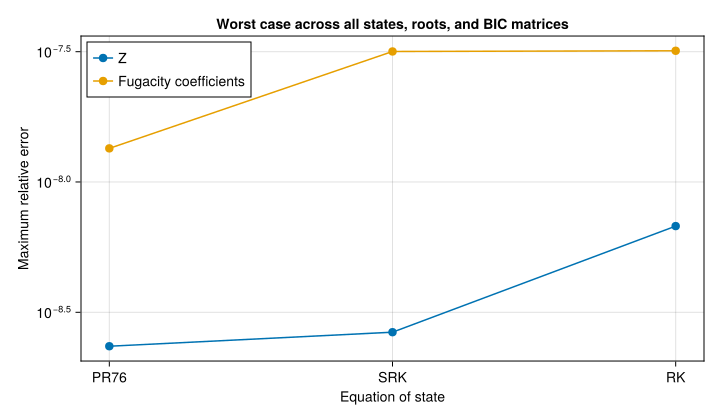

EOS reference validation
This example compares Peng-Robinson 1976 (PR76), Soave-Redlich-Kwong (SRK), and Redlich-Kwong (RK) with Clapeyron.jl. It checks compressibility and fugacity coefficients for a set of cases.
Comparison matrix
using Clapeyron, MultiComponentFlash, Test
names = ["carbon dioxide", "methane", "decane"]
properties = (
MolecularProperty(0.0440, 7.38e6, 304.1, 9.412e-5, 0.224),
MolecularProperty(0.0160, 4.60e6, 190.6, 9.863e-5, 0.011),
MolecularProperty(0.1420, 2.10e6, 617.7, 6.098e-4, 0.488),
)
conditions = (
(p = 1.0e6, T = 300.0, z = [0.5, 0.3, 0.2]),
(p = 5.0e6, T = 350.0, z = [0.2, 0.7, 0.1]),
(p = 2.0e7, T = 500.0, z = [0.1, 0.2, 0.7]),
)
interactions = (
zeros(3, 3),
[0.0 0.08 0.03; 0.08 0.0 0.015; 0.03 0.015 0.0],
)
function compare_cubic_eos(names, properties, conditions, interactions)
relative_error(value, reference) =
abs(value - reference)/max(abs(reference), eps(Float64))
Tc = [property.T_c for property in properties]
Pc = [property.p_c for property in properties]
Mw = [1000property.mw for property in properties]
acentricfactor = [property.ω for property in properties]
comparisons = NamedTuple[]
for k in interactions
mixture = MultiComponentMixture(properties; names = names, A_ij = k)
parameters = (; Tc, Pc, Mw, acentricfactor, k, l = zeros(size(k)))
models = (
(label = "PR76", eos = PengRobinson(),
reference = Clapeyron.PR(names;
userlocations = parameters, verbose = false)),
(label = "SRK", eos = SoaveRedlichKwong(),
reference = Clapeyron.SRK(names;
userlocations = parameters, verbose = false)),
(label = "RK", eos = RedlichKwong(),
reference = Clapeyron.RK(names;
userlocations = parameters, verbose = false)),
)
for model in models, state in conditions
eos = GenericCubicEOS(mixture, model.eos)
for (phase, reference_phase) in ((:liquid, :l), (:vapor, :v))
state_with_phase = (;
p = state.p, T = state.T, z = state.z, phase)
forces = force_coefficients(eos, state_with_phase)
scalars = force_scalars(eos, state_with_phase, forces)
Z = mixture_compressibility_factor(
eos, state_with_phase, forces, scalars)
phi = [exp(MultiComponentFlash.component_fugacity_coefficient(
eos, state_with_phase, i, Z, forces, scalars))
for i in eachindex(state.z)]
reference_volume = Clapeyron.volume(
model.reference, state.p, state.T, state.z;
phase = reference_phase)
reference_Z = state.p*reference_volume/
(Clapeyron.Rgas(model.reference)*state.T*sum(state.z))
reference_phi = Clapeyron.fugacity_coefficient(
model.reference, state.p, state.T, state.z;
phase = reference_phase)
push!(comparisons, (;
eos = model.label,
Z,
reference_Z,
Z_relative_error = relative_error(Z, reference_Z),
phi,
reference_phi,
phi_relative_error = relative_error.(phi, reference_phi)))
end
end
end
return comparisons
end
comparisons = compare_cubic_eos(
names, properties, conditions, interactions)
@test length(comparisons) == 36
@test all(row -> isapprox(row.Z, row.reference_Z;
rtol = 1.0e-7, atol = 1.0e-10), comparisons)
@test all(row -> isapprox(row.phi, row.reference_phi;
rtol = 1.0e-7, atol = 1.0e-10), comparisons)
length(comparisons)36Parity plots
The dashed line indicates exact agreement. Fugacity coefficients use logarithmic axes because they span a wider range than $Z$.
using CairoMakie
# CairoMakie.activate!(type = "svg")
eos_names = ["PR76", "SRK", "RK"]
colors = [:dodgerblue3, :darkorange2, :seagreen4]
fig = Figure(size = (920, 410))
z_axis = Axis(fig[1, 1];
xlabel = "Clapeyron Z",
ylabel = "MultiComponentFlash Z",
title = "Compressibility parity",
aspect = DataAspect())
phi_axis = Axis(fig[1, 2];
xlabel = "Clapeyron fugacity coefficient",
ylabel = "MultiComponentFlash fugacity coefficient",
title = "Fugacity-coefficient parity",
xscale = log10,
yscale = log10,
aspect = DataAspect())
for (eos_name, color) in zip(eos_names, colors)
rows = filter(row -> row.eos == eos_name, comparisons)
reference_z = [row.reference_Z for row in rows]
calculated_z = [row.Z for row in rows]
reference_phi = [value for row in rows for value in row.reference_phi]
calculated_phi = [value for row in rows for value in row.phi]
scatter!(z_axis, reference_z, calculated_z;
color = color, markersize = 9, label = eos_name)
scatter!(phi_axis, reference_phi, calculated_phi;
color = color, markersize = 9, label = eos_name)
end
z_limits = extrema(vcat(
[row.reference_Z for row in comparisons],
[row.Z for row in comparisons]))
phi_limits = extrema(vcat(
[value for row in comparisons for value in row.reference_phi],
[value for row in comparisons for value in row.phi]))
z_line = collect(z_limits)
phi_line = collect(phi_limits)
lines!(z_axis, z_line, z_line; color = :black, linestyle = :dash)
lines!(phi_axis, phi_line, phi_line; color = :black, linestyle = :dash)
axislegend(z_axis; position = :lt)
fig
The maximum relative error makes the remaining differences visible.
maximum_z_error = [maximum(row.Z_relative_error
for row in comparisons if row.eos == eos_name) for eos_name in eos_names]
maximum_phi_error = [maximum(maximum(row.phi_relative_error)
for row in comparisons if row.eos == eos_name) for eos_name in eos_names]
error_figure = Figure(size = (720, 420))
error_axis = Axis(error_figure[1, 1];
xlabel = "Equation of state",
ylabel = "Maximum relative error",
title = "Worst case across all states, roots, and BIC matrices",
yscale = log10,
xticks = (1:length(eos_names), eos_names))
scatterlines!(error_axis, 1:length(eos_names), maximum_z_error;
markersize = 12, label = "Z")
scatterlines!(error_axis, 1:length(eos_names), maximum_phi_error;
markersize = 12,
label = "Fugacity coefficients")
axislegend(error_axis; position = :lt)
error_figure